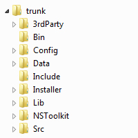
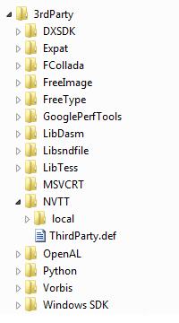
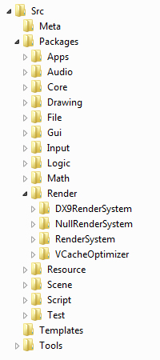
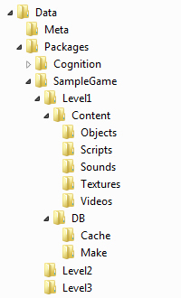

SDK Structure
Noesis Engine physical structure is described in this section.
What follows is a description of each of the sub-folders under NoesisSDK.
/3rdParty
In this folder, external libraries and programs are stored.
There is a directory for each library. It will contain a ThirdParty.def file that describes the package and defines rules to be used in Noesis Engine. If third party code is available, a folder named Local will contain an adapted copy of the library version used by Noesis Engine.
/Bin
Binaries are stored in this folder: executables, dynamic libraries and symbol files. The first time you deploy NoesisSDK, this folder is empty. Compiling a distribution will generate the proper binaries in this folder.
There are no subdirectories inside this folder. All the configurations are stored at the same level. The configuration name is used as a prefix, for example:
- Debug.Kernel.dll
- Debug.Kernel.pdb
- Release.Kernel.dll
- Release.Kernel.pdb
Binaries of different platforms must not be mixed. There must be a SDK for each platform, each one with its own Bin directory.
/Src
This is the folder where all the source code can be found. It is structured in four folders: Meta, Packages, Templates and Tools.
/Src/Meta
Metadata for each package is located here. The metadata defines the information associated to a package. For example, name and description. Dependencies to other packages are defined here too. The metadata is vital for NsToolkit to work properly.
The metadata directory have information for all the packages although you are working with only a subset of them in your distribution.
/Src/Packages
This is the folder where all the packages are stored. For each module there is a directory and inside it, a directory for each package. Packages are structured in two folders:
- Include: contains public headers for a package. These are the files that other packages depending on this one can use.
- Src: contains private source and header files for a package. Other packages will not be able to use directly this files.
/Src/Templates
Templates for each kind of source file are located here. You can use those files instead of starting from scratch.
/Src/Tools
Applications that are not considered packages and that are useful for developing applications with NoesisSDK are stored here. NoesisConsole is an example of tool located here.
/Data
Data files are stored inside this directory. Data is structured like source code, it contains a Meta folder and a Packages folder.
/Data/Meta
The same as in Src.
/Data/Packages
Packages folder contains a subdirectory for each module and inside it, a directory for each data package. Data packages are structured in two folders: Content and DB.
- Content: contains all data sources: .tga, .dds, .dae, etc.
- DB/Make: the subdirectory /Make contains a file for each data source with build instructions to generate the final application resources.
/Include
This is where you can find the includes that you are using in a given distribution. NsToolkit will copy the needed include files from each used package to this directory. This directory is useful to external applications that want to use the SDK.
NsToolkit does not yet generate this information. So the only file you will find in this directory is Noesis.h
/Lib
Link libraries are generated in this directory. There is a folder for each configuration.
/Config
Each build configuration is defined here. For each configuration there is a folder with files describing how to configure a project for each platform. NsToolkit uses this information to generate the projects: makefiles, visual studio projects, etc.
/NsToolkit
NsToolkit, a tool implemented in Python, is the heart of Noesis Engine. NSToolkit is used to generate distributions, update source code, compile, check for dependencies, etc.
Apart from the script files, in this directory there is a vital file: NsToolkit.conf. This file is used to configure NSToolkit and to define the set of root packages that define a distribution. NsToolkit.conf.sample can be used as a template to create NsToolkit.conf